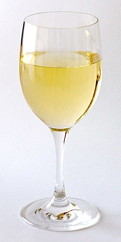

Valkoviinien valmistuksessa kuoret poistetaan jo käymisen alussa, jotta niistä ei liukene viiniin väriä ja tanniineja. Valkoviiniä tehdään yleensä vaaleista rypäleistä, mutta sitä voidaan tehdä tummakuorisistakin rypäleistä, sillä kaikkien rypäleiden mehu ilman kuoria on vaalean vihertävää. Valkoviiniastioita jäähdytetään käymisen aikana, jotta viiniin saadaan hedelmäinen maku. Valkoviinien ei yleensä anneta käydä läpi maitohappokäymistä kuten punaviinien, sillä niiden kuuluu yleensä olla kirpeitä ja hapokkaita. Valkoviinin voidaan antaa levätä hiivasakan kanssa, mikä antaa viiniin lisämakua autolyysin kautta. Valkoviinien käymislämpötila on alle 20 astetta ja niitä käytetään parista viikosta kuukauteen
Merkittävimmät vaaleat rypälelajikkeet ovat Chardonnay, Sauvignon Blanc ja Riesling. Helposti viljeltävä Chardonnay on laatuviineissä eniten viljelty vaalea lajike. Chardonnay-viinit ovat täyteläisiä ja hedelmäisiä. Sauvignon Blanc -viinit ovat kepeitä, aromaattisia ja hapokkaita, ja niitä tuotetaan melko viileillä alueilla, etenkin Loiren seudulla. Saksassa ja muissa viileissä maissa suositusta Rieslingistä saadaan hapokkaita ja mineraalisia viinejä.
